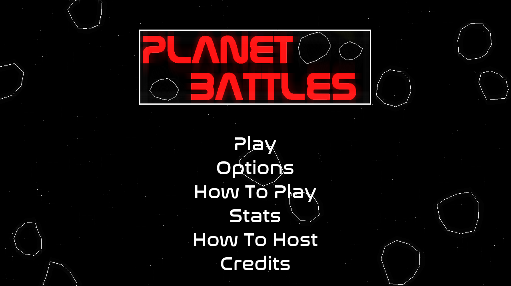

Overview
Planet Battles is a peer-to-peer PvP game, which takes place in space. You control a small "spaceship" with a variety of abilities that are used to eliminate the enemy players. You can play rounds up to 4 players in a large map with asteroids floating arround colliding into each other.
The main menu offers a variety of things to look at for new players. For example, there is the option to look at the How To Play guide, which gives a breif overview on the mechanincs of the game. The logo changes colour depending on the last used spaceship.
Hosting
Any player can start a lobby for their friends to join. You can choose the port or host on. However, you need to port forward in order for anyone to be able to join. Whilst creating a lobby you have a variety of game options to play with.
All options are explained by clicking the info button
Spaceships
Each player has the choice between three different spaceships - each with unique abilities. Red with a spray gun, green with a scatter gun, and blue with a huge laser. Below is the demonstration of green's scatter gun and asteroid defense. Each ability interacts with players and asteroids in different ways offering for expanded gameplay potential
Addtionally, each spaceship has varying stats in speed, health, and damage output. For example, the red ship can dash and the blue ship can push asteroids.

Map Events
Throughout a match three random events can take place on the map: wormholes, gamma rays, and black holes
Wormholes allow players to teleport accross the map, gamma rays damage the player for idling in a particular region, and black holes attract everything on the map towards the center for elimination.
Round Ending
When a player is elimiated they're shown this menu. Here they have the opportunity to spectate other players and see how long until they respawn to continue fighting. The round ends when everyone but one player runs out of lives

Within the Game Over menu, the player can choose another ship (bottom left) and vote a rematch. You can also see a leaderboard of who's won the most games in the past few matches